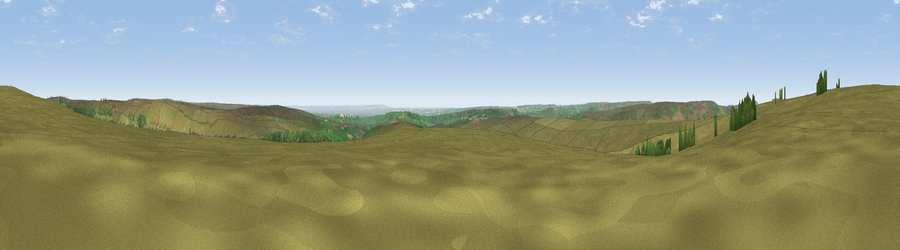

Viewpoint near Chop Gate
#10079 in England · top 28% of its area beats it · near Chop GateWhere it is
The exact computed spot (SE 60675 97075). Click the marker for map links.
The view, rendered

A 360° render of this exact spot computed from the terrain model, tree cover and land cover — summer colours, afternoon light, calibrated against photographs of famous viewpoints. Real trees, hedges and buildings will differ in detail.
The panorama
Grey silhouette: terrain skyline in each direction (720 bearings, Earth curvature and refraction included). Dashed green: skyline with trees (+15 m) and buildings (+8 m) as obstacles. Blue strip: how far the ground is visible on each bearing.
Where the view opens
Wedge length = distance to the farthest visible ground on that bearing (vegetation-aware). Rings at 10, 25 and 50 km.
What fills the view
88% grassland · 7% woodland · 4% cropland
Angular shares of the visible panorama (visual magnitude), not map area. Landscape diversity 0.19 (0–1 Shannon).
Key numbers
More beautiful places nearby
The staircase of upgrades: each row has a higher view potential than everything closer. Driving times are estimates from straight-line distance, calibrated against real road routing — check an actual route before setting out.
| Place | Direction | Drive | Score |
|---|---|---|---|
| Viewpoint near Chop Gate | N · 0 km | ~2 min | 65.4 |
| Viewpoint c9909_9299 | ESE · 5 km | ~10 min | 67.8 |
| Viewpoint near Ingleby Greenhow | N · 6 km | ~13 min | 75.6 |
| White Hill | NNW · 8 km | ~16 min | 84.2 |
| Viewpoint near Great Broughton | NNW · 8 km | ~16 min | 84.4 |
| Viewpoint near Kirkby | NW · 10 km | ~19 min | 84.9 |
| Carlton Bank | WNW · 10 km | ~20 min | 85.1 |
| Roseberry Topping | N · 16 km | ~28 min | 85.8 |
54.36559, -1.06768 · source: screening · position refined by local search. Computed location — check access rights before visiting.